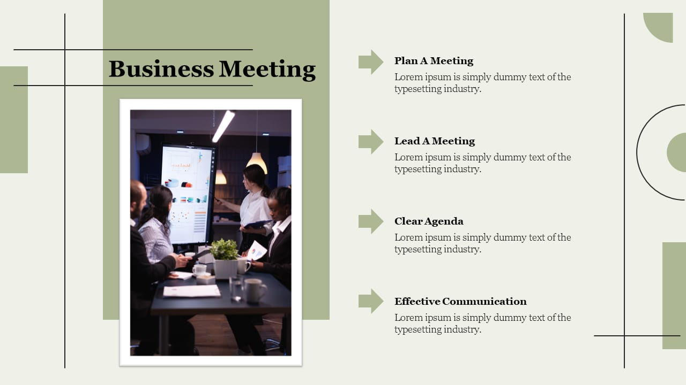
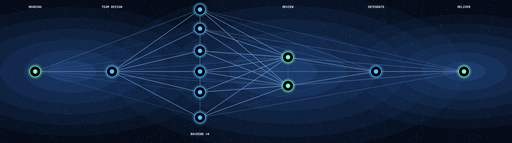
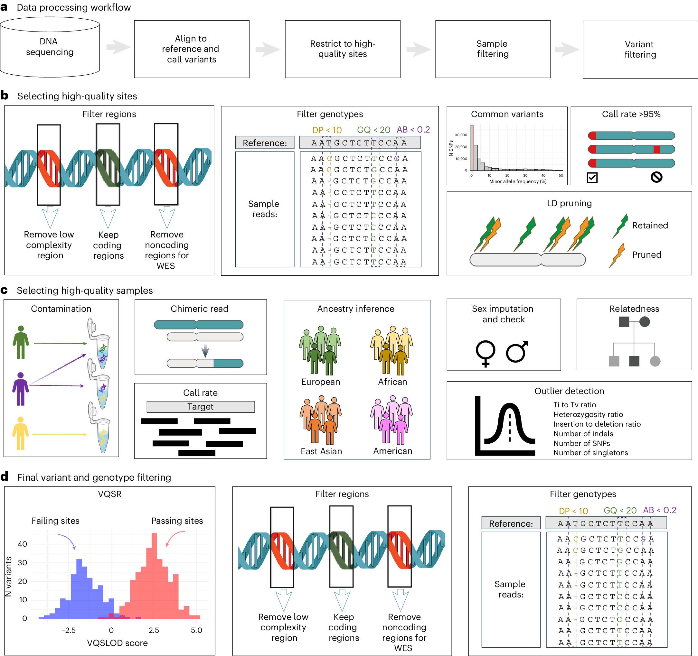
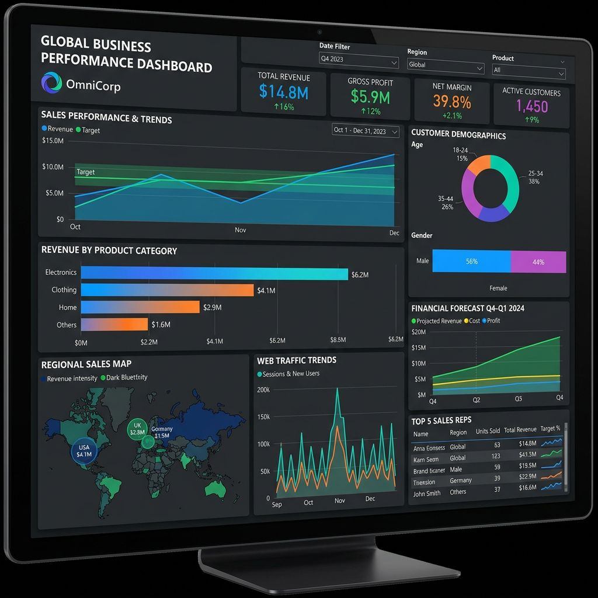
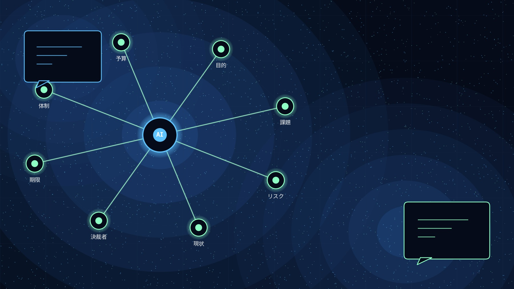
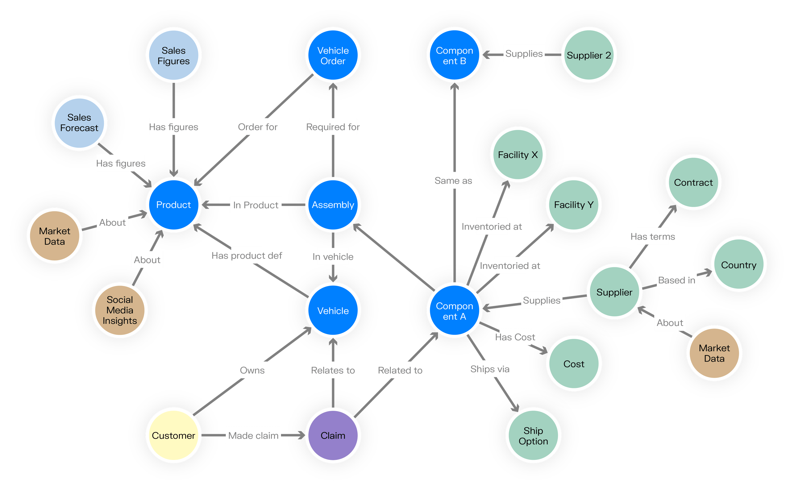
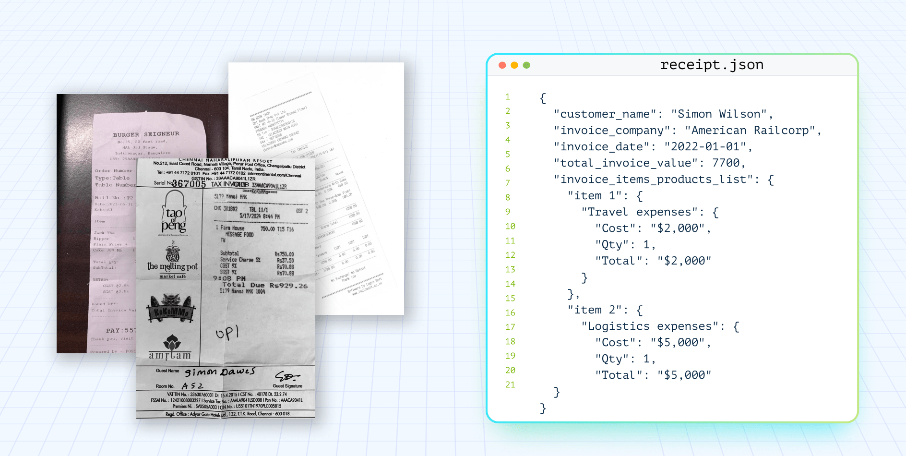
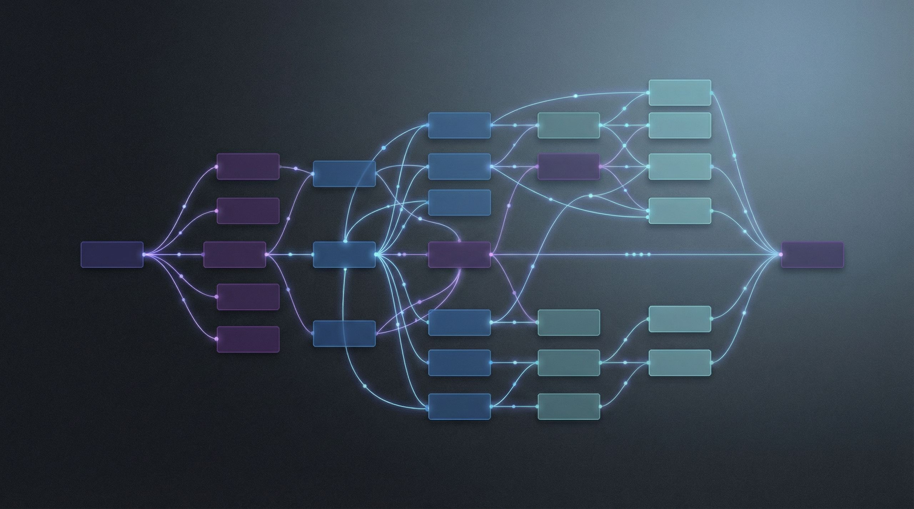
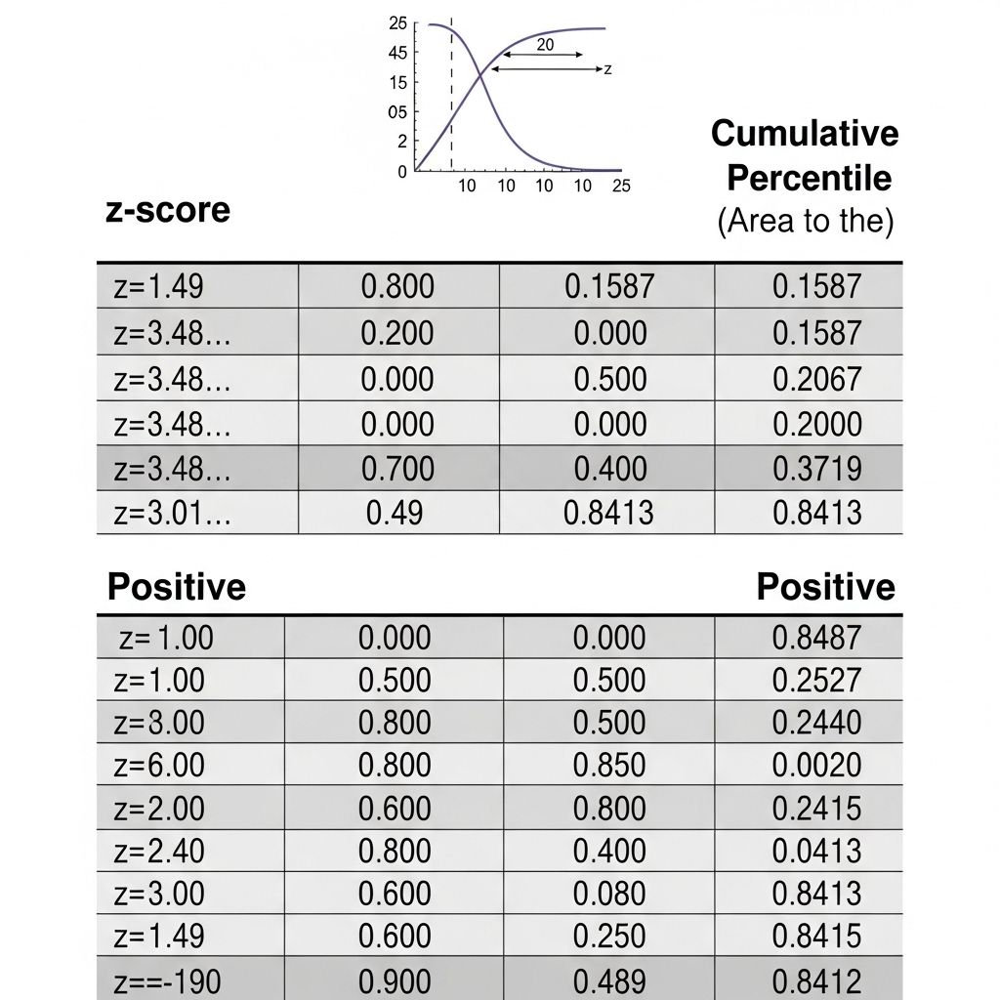

10年以上の自営業経験と、エンタープライズITインフラの運用実務。
そこに生成AIを掛け合わせ、業務自動化ツール・SNS運用パイプライン・
画像／文章／リサーチ支援まで、自分で設計・実装してきた記録です。
はじめまして、TK Officeの竹村直人です。
2014年に遊戯事業で独立して以来、Eコマース、システムエンジニアと、
異なる業界を横断しながら「事業を立ち上げ、収益を上げる」現場に立ち続けてきました。
直近3年間は、数千台規模のエンタープライズ環境で MECM / WSUS の運用・保守を担当。 その傍らで生成AIの可能性に強く惹かれ、 2025年に生成AI事業を立ち上げました。
私の根底にあるのは、「時間は有限であり、本質的でない作業に命を削るべきではない」という哲学です。 物事を目先の感情や常識でジャッジせず、全体をフラットな「構造」として俯瞰する。 そして、人間が本来やるべき「価値創造」にのみリソースを集中させる手段として、AIを用いたパイプライン構築にこだわっています。
経営者としての「事業のボトルネックを見抜く目」と、 複数の生成AIをチームとしてオーケストレーションする実装力。 この2つを軸に、既存の枠組みを壊し、実運用に耐える完全自動化の仕組みを自分の手で作ってきた記録です。
これまでに自分で手を動かして設計・構築してきた領域を、3つに整理して掲載しています。 いずれも「導入して終わり」ではなく、業務フローへの組み込みと運用まで踏み込んで実装した経験です。

「どこにAIを差し込むと効くか」を、業務ヒアリング → 課題整理 → ツール選定 → PoC の順で 設計・検証してきました。自身の複数事業と副業案件で、要件定義から運用設計まで一貫して担当。
Claude / GPT-4o / Gemini などのAPIと、Node.js・Python・React・n8n を組み合わせて、 業務自動化ツールやWebアプリを実装してきました。SNS運用パイプラインや LINE Bot、 ローカルダッシュボードなど、実運用に耐える構成での実装経験があります。
ロゴ・バナー・アイキャッチなどの画像生成、多言語翻訳、記事・文章生成、 市場／技術リサーチまで、生成AIを日常的に業務ツールとして使い倒してきました。 単発制作から継続運用まで、複数モデルの使い分けを含めて実務経験があります。
2025年〜現在、「生成AIで実際どこまでできるか」を検証する目的で試作したプロジェクト群です。 多くは商用リリース済みの成果物ではなく、あくまで自分で使いながら手応えを確かめた実証事例ですが、 一部は実際の受託案件に投入し、納品まで完了した実装も含みます。 内容の性質ごとに4つのグループに分けて掲載しています。 各グループの先頭は主力案件、以降は補助的な試作という位置づけです。
占い・AI・美容・副業など複数ジャンルのSNSアカウントを、 収集 → 生成 → 承認 → 投稿 → 計測まで自動化する個人開発の統合ワークスペース。 1つの巨大アプリではなく、目的ごとに独立した小さなツール群を、 単一ダッシュボードと Claude Code の並列AIエージェントが横断運用します。
「アカウントを増やす＝フォルダを1つ足すだけ」という思想で、
エンジンにアカウント固有のコードを書かない3層構造を採用。
アカウントごとの文体・記憶・下書きはaccounts/<名前>/に分離され、
エンジンは汎用パイプラインとして再利用できます。
公開の最終判断は必ず人間が握るという設計哲学。 AIは下書きまで、公開ボタンは人間 — 薬機法・景表法・ステマ規制などの コンプライアンスリスクを構造的にブロックします。
クラウドサーバーやcronジョブを別途契約せず、 個人PC上のWindowsタスクスケジューラから Node.jsスクリプトを直接呼び出す設計。 「常駐プロセス」ではなく「決まった時刻に起動して仕事をしたら終了する」バッチジョブとして組むことで、 PCの負荷を抑えつつ複数の収集パイプラインを並行して回します。 サーバー費用ゼロで定期実行を成立させる、個人開発らしい現実解です。
research/watchlist/ 配下の収集スクリプトを起動。
著名人Xポーリング・YouTubeアーカイブ等が動き、
登録済みアカウント・チャンネルの新着投稿/動画を取得してローカルJSON DBに追記。
取得後は要約・統計情報も更新されます。
ファイルベースの並列AI指示システム（panel_hub）を自作。 各AIパネルへの指示と完了報告を Obsidian vault 内の Markdown（inbox/outbox）で やり取りし、チャットログに埋もれない永続記録として残します。
複数パネルが同時に同じファイルを編集しないようロックファイル排他制御を実装。 各作業はブランチ・PR経由で行い、マージ前にCowork側のAIが独立テストを行う PRベース品質担保フローを運用しています。
フレームワーク非依存の素のNode.js（ESM）を中核に、
データはJSONファイルベース（Git差分管理可）、テストはnode --test標準機能で、
外部API部分は依存性注入でモック化する軽量設計。

// AI開発パイプライン — 要件定義 → チーム実装 → レビュー → 統合 → 納品機能ごとに分業する実装エージェントと、 その成果物を検証・承認するレビューエージェント、 全体のチーム編成と最終判断を担う設計統括エージェント―― この3層構成で、実際の開発チームに近いレビュー体制を再現したパイプライン。 要件定義から実装・単体テスト・レビュー（差し戻し）・統合・E2E検証・納品物作成までを自律的に進め、 レビューで解決しない指摘だけを人間へエスカレーションします。 実際の受託案件（食品ギフト仲介事業者向け・受発注管理システム）を このパイプラインで構築し、納品まで完了させました。
DETAIL claude.ai/code/artifact/0ebb20de-2fb4-4876-a4ae-c3d9180cf2bf ↗
DEMO oroshi.himitsuno-heya123.com ↗ ID: TKC / PW: TKC123
※ダミーデータで動作するデモ環境です。実際の受注登録から発注書PDF生成・月次集計までの一連の業務フローを実際に操作して確認できます。
クライアントへのヒアリング内容をもとに、バックエンド（機能別の実装チーム）から フロントエンド（Web UI構築）まで、その案件に必要な役割分担を「設計統括エージェント」が 都度設計する動的なチーム編成を採用。固定の組織図はなく、 レビューの過程で追加の処理が必要と判断されれば、 その場で新しいチームを編成し直すこともあります。
編成された各チームの成果物は「レビューエージェント」が検証し、 最終的な統合判断は設計統括エージェントが行います。 「誰が作ったか」ではなく「実機で動くか」を実際にコマンドを実行して検証してから 承認する、というルールを徹底しています。
指摘に対する差し戻しは最大3ラウンドまで。 それでも解消しない場合は自動的に人間へのエスカレーションに切り替わる 設計で、実際に「テストコードが依存関係の変更に追従できていない」という 指摘が3ラウンド未解消のまま人間判断に回された記録が残っています。
パイプライン起点の要件ヒアリング自体も自作のAIチャットアプリ 「DX導入ヒアリングAI」で行っており、8領域の対話ヒアリングを通じて 案件カルテを自動生成し、設計統括エージェントへのインプットとして渡しています （詳細は下部Works「DX導入ヒアリングAI Webアプリ」参照）。
チーム名・チーム数はあらかじめ固定されておらず、 ヒアリング内容から設計統括エージェントがバックエンド（機能別の実装チーム）から フロントエンド（Web UI構築）・最終統合まで案件ごとに設計します。 以下は今回の案件（食品ギフト仲介事業者向け）で実際に編成された体制の例です。
各チームの成果物はレビューエージェントが実機でコマンドを実行して検証し、 承認 or 差し戻しを判定します。レビューの結果、既存チームの担当範囲を超える 追加処理が必要と判断された場合は、その場で新しいチームを編成して対応します。 差し戻しが3ラウンドを超えても解消しない場合は、 「誰の担当領域か」「なぜ直っていないか」を含む証跡（実行ログ・トレースバック・ タイムスタンプ比較）とともに自動で人間へエスカレーションする設計です。 統合工程では、既存成果物と重複する新規作成を避けるため、 grep等での実機検証を経てから「作らない」判断を下す場面もありました。
パイプラインが生成した成果物は、最後に別途開発した納品前セキュリティ・品質検査ツール でレビューします。静的解析（Python: Ruff・mypy・Bandit／JavaScript・TypeScript: ESLint・tsc／ Java: Checkstyle・PMD）に加え、Dockerで隔離した環境での動的検査、任意でAIによる意味レビューまで行い、 「納品可能」「条件付き納品可能」「要修正」「判定不能」の4段階判定を根拠付きで返します。 安全性に具体的な疑いが残る場合は自動で処理を止め、人間の承認記録なしには解除されません。
各チームの実装・レビュー・統合の判断根拠を、実行ログや差分の一次情報で 残す運用を徹底。設計統括エージェントは着手前に必ず既存の納品フォルダを確認し、 同一入力に対してすでに完了済みの成果物がないかを実機検証してから 作業に入る、という「重複作業を避けるチェック」を組み込んでいます。
納品物は「かんたん説明モード」「技術者向けモード」を ボタンで切り替えられる単一HTMLファイルとして自己完結させ、 クライアントが特別なソフトなしにブラウザだけで確認できる形にまとめました。
Python 製の実装チームをFlaskベースのWebアプリへ統合し、
PDF生成・DB永続化・通知ログ生成までを1つの業務フローとして接続。
単体テストは各チームのunittest、
結線確認はE2Eテストスイートで担保。最終レビューには
Ruff・mypy・Bandit・Docker Sandboxを使った専用ツールを使用しています。

// quality-checker — AIが下書き、品質ゲートが採点SNS下書きを薬機法・景表法・PR表記・文体ガイド整合の観点で自動採点し、 修正待ち / 確認待ち / 承認済みを明確に分離。 dry-runでの投稿前検証と、ダッシュボードでの状態確認まで含めた 「AIに任せつつ、人間が最終判断する」運用テンプレート。

// panel_hub — inbox / outbox / status複数の開発タスク・AIパネルを、 inbox（指示）/ outbox（報告）/ status（状態）という ファイルベースの3層構造で管理する司令塔。 著名人ポーリング、YouTubeアーカイブ、Drive同期、ダッシュボード修正など、 並行して進む作業を混線させずに走らせます。

// hearing-webapp — 8領域ヒアリング → 案件カルテ自動生成クライアントの案件要件を8領域にわたって対話形式でヒアリングし、 案件カルテ（要件定義の下敷き）として構造化・自動送信するWebアプリ。 もとはChatGPTのカスタムGPTとして運用していたものを、 共有制限の仕様変更を受けてOpenAI APIを直接叩く自前のチャットアプリに移行。 ヒアリング結果はWebhook経由で案件管理シートへ自動反映されます。

// AI wiki — 情報を再利用できる知識資産へClaude Code・Codex・Cursor・MCP・Skills・NotebookLM 等の AI活用に関する情報を自動収集し、テーマ別に分類・統合ノート化。 単なるブックマークではなく、投稿ネタ・note記事・教材アイデアへ 再利用できる知識資産として蓄積します。
PDFや動画文字起こしなどの長文資料を、 チャンク分割 → 章要約 → 統合 → 検証まで一気通貫で処理。 日本語崩壊の検知、並列要約、数値ゲートによる品質検証まで含め、 大量の資料を読める知識資産に変換します。
日々の稼働データをSQLiteに記録し、Claude Haiku APIが自動で日報を生成。 Docker + Caddy で自前VPSに載せ、月額コストを抑えた構成に。

// LINE × Claude — 伝票OCR自動化LINE Bot に伝票画像を送るだけで、Claude API がOCR・仕訳し、 Google Sheets へ自動記帳。手作業の伝票処理を大幅に削減。

// n8n × GPT-4o — 47ノード自動化n8n を47ノードで構成し、GPT-4o と Together AI で テキスト・画像を生成、Instagram に毎日定時投稿する仕組みを構築。
Gemini API で記事を自動生成し、WordPress へ配信。 作品3,000件・タレント1,879件のデータベースを構築し、大規模運用に耐える設計に。
自動リトライ、重複排除、レート制御を備えた堅牢なデータ収集基盤。 Streamlit の管理画面で非エンジニアでも運用可能に。
AI × ffmpeg × 音声文字起こしを組み合わせた動画編集環境。 動画素材の下処理、音声からのテロップ素材化、 編集構成の補助まで、動画制作フローをAIで効率化します。実運用に投入済み。

// 商品API × Streamlit — CSV / HTML 自動生成商品データAPI（DMM系）から情報を取得し、 CSVレポートやWordPress貼り付け用HTMLを自動生成。 SQLiteでデータを管理し、Streamlit UIで非エンジニアでも操作可能に。 APIデータ取得から記事素材生成までを一気通貫で自動化します。
商品CSV・プロフィールデータをアップロードし、 プロフィールと商品情報を統合して一覧表示・記事管理・投稿管理を行うWebアプリ。 React / TypeScript / Vite / Tailwind CSS のモダン構成で、 CSVデータの取り込みから記事運用までを一つの画面に集約しています。
「AI開発パイプライン」（Featured Work参照）は、食品ギフト仲介事業者向けの実案件で 初めて実運用しましたが、1件の案件を任せられるだけでは「開発組織」としての 再現性は証明できません。ジャンル・技術要件がまったく異なる案件を並行して大量に 処理しても、レビュー体制や品質ゲートが崩れずに機能し続けるか——それを確認するために 企画した実証バッチが、このGROUP Dの35件です。
OCR・PDF生成・セキュリティ・業務システム・レガシー変換など、あえて領域を大きく 散らして設計書を個別に用意し、1件ごとに他プロジェクトと完全に独立してゼロから 実装させています。
各デモは通常の受託案件とまったく同じプロセスを1件ずつ通しています。 実装エージェントによる実装 → レビューエージェントによる検証（差し戻しは最大3ラウンド）→ 最終検査 → 課長承認 → 部長統括、という流れをすべて経たうえで、承認済みのものだけを VPSへ個別デプロイし、実際に操作できるデモとして公開しています。
各カードに表示しているCOST・AI稼働時間は演出ではなく実数値です。 パイプラインの実行ログ（cost-log）から、そのデモ1件を実装するのに実際にかかった AI利用コストと処理時間を集計して掲載しています。
レシートや手書き伝票の画像をアップロードすると、OCRと生成AIで内容を読み取り構造化データとして抽出します。レシートモードでは合計金額の計算や勘定科目の推測を、手書き伝票モードでは品目・数量のテーブル抽出とTSV変換を行い、抽出結果は一覧で確認・編集・エクスポートできます。
雑な商談メモやボイスメモの文字起こしなど、自由記述のテキストを生成AI（Function Calling）で解析し、構造化データへ自動変換するツールです。CRMモード（商談情報の抽出）とToDoモード（タスクの自動仕分け）の2種類に対応し、出力のフォーマット検証やハルシネーション検知の仕組みも備えています。
AI開発パイプライン自身が生成する実データ（複数レーンの実行ログや処理状態の遷移記録）を読み込み、稼働状況や異常の発生をダッシュボード上で可視化するツールです。ログ読み込みの疎通確認や、機微情報のマスキング処理、画面上でのエラー表示など、運用監視ツールとしての作り込みがされています。
契約期間・就業場所・労働時間・賃金などの雇用条件をフォームに入力するだけで、労働条件通知書を兼ねた雇用契約書PDFを自動生成するツールです。法的アドバイスではない旨の免責表示を画面とPDFの両方に明示し、生成履歴を監査ログとして記録する機能も備えています。
Excelファイルをアップロードするだけで、列構成から項目定義を自動推測し、プレビュー画面で内容を確認・修正したうえでアプリとして確定できるツールです。確定後はデータが一括投入され、そのままCRUD操作や検索を行える業務アプリとして利用できます。
Webhook・フォーム・AI判定・スプレッドシート保存・条件分岐といったノードを画面上でつなぎ合わせ、簡易的な業務自動化フローを組み立てられるZapier風のツールです。トポロジカルソートによる実行順制御や、Webhookの署名検証・重複実行防止（冪等性キー）などの実務的な仕組みも組み込まれています。
外部API利用時のコスト暴走を防ぐガードシステムのデモです。呼び出し前の予算事前チェックと呼び出し後の実コスト精算を組み合わせたハイブリッド方式で、設定した予算上限に達すると自動的に処理を停止します。
バッチ処理で失敗した注文ジョブを消失させず、デッドレターキューへ退避して可視化するダッシュボードです。意図的なエラー注入によって失敗を再現し、誰が・何を・どう失敗したかをログから追跡できます。
氏名・電話番号・メールアドレス・クレジットカード番号などの個人情報を検出し、復元不能な形でマスキングするツールです。ルールベースとAI検出を組み合わせたハイブリッド方式を採用し、検出精度は正解データとの重なりを基準に自動採点されます。
二重送信や連打などの多重リクエストを受けてもデータが壊れないことを実演するデモです。DBのUNIQUE制約とトランザクションによる安全な実装と、対策を施さないナイーブな実装を並べて比較し、対策なしでは実際にデータ不整合が起きることを示します。
手書きのスケッチ画像を生成AIで読み取り、構造化された中間JSONに変換したうえで、決定論的なロジックによりHTML/CSSのワイヤーフレームへ変換するデモです。非決定的な画像解析と決定的な変換処理を明確に分離し、変換部分は厳密な自動テストで検証されています。
オンライン注文アプリを題材に、決済APIと天気APIという重要度の異なる外部依存先をそれぞれ独立したサーキットブレーカーで監視するデモです。障害発生時は決済のような重要機能を安全に停止し、非重要機能は標準値へ自動フォールバックしながら継続動作します。
任意のCSVファイルをアップロードすると区切り文字や文字コードを自動判定して読み込み、内容に適したグラフ種別をAIが提案・自動生成するツールです。データを開いてすぐに可視化の示唆を得たい場面を想定しています。
自然文で書かれた要件定義書のテキストを入力すると、AIがエンティティ構造を解析し、同じ中間データからMermaid形式のER図とSQLのCREATE TABLE文を同時に生成します。要件定義から設計書起こしまでの工程を大幅に短縮する用途を想定しています。
図書館の貸出・予約業務を題材に、利用者証の有効期限や延滞状況のチェックを伴う貸出受付、書誌検索、予約登録・取消、返却時の予約繰り上げまでを一通り扱う業務システムです。所蔵状況と予約状況を厳密な状態遷移ルールで管理します。
チャット風の投稿フォームに入力されたメッセージをキーワード・正規表現スコアリングで解析し、緊急度を自動判定して適切な宛先へ振り分けるツールです。判定根拠を画面に表示し、誤判定時は手動で再分類することもできます。
AIチャットボットに対するプロンプトインジェクション攻撃の検知、事実と異なる回答（ハルシネーション）の検知、出力データの構造バリデーションという3つの防御機構を単体で検証できるデモです。
複数テナントが同居するシステムで起こりがちなデータ越境アクセスの危険性を、あえて分離漏れのある実装と正しく分離された実装を並べて体験できるデモです。全リソース・全操作の組み合わせを自動テストで網羅的に検証します。
契約書などの同意フォームを一意なURLで発行し、同意操作を確実に一度きりに制限する仕組みのデモです。改ざん検知用のハッシュ連鎖など、証跡の完全性を担保する設計になっています。
会議の発言記録（CSVまたはJSON形式でアップロード可能）を解析し、参加者ごとの発言時間の偏りを診断するツールです。ファシリテーションの改善につなげる用途を想定しています。
レガシーシステムが出力するSJIS固定長ファイルやCSVを、現代的なJSON／CSV形式へ変換するETLツールです。変換前後で数値合計を独立して再計算・突合することで変換の正確性を検証します。
1万行規模のCSVデータを一度に読み込まず、設定可能なサイズのチャンクに分割して段階的にデータベースへ取り込むインポートツールです。重複データの検出やエラー行の種別ごとの集計を行います。
官公庁の調達仕様書PDFをアップロードすると、記載されている必須要件を自動抽出してチェックリスト形式で一覧表示するツールです。提案書作成時の要件見落としを防ぐことを目的としています。
時系列に書きなぐった雑多なメモを入力すると、LLMが行ごとの割り当てのみを判断し、本文の複製や情報欠落チェックはサーバー側の決定的処理で行うことで、見出し階層付きのMarkdownに整形するツールです。
メールやメモ、チャットなど複数ソースからの断片的な状況報告を、案件ごとの時系列の状態遷移履歴として蓄積管理するツールです。期限が近づいた案件や超過した案件を自動判定してアラートを出す機能も備えています。
手書きのシフト表を撮影・アップロードすると、Vision AIで内容を読み取り、時刻の正規化や信頼度判定を経てカレンダー用のICSファイルに変換するツールです。アップロード画像はサーバーに保存せず、その場限りで処理します。
手書きの簡易な間取り図をアップロードすると、AIが部屋の形状や畳数などを読み取り、決定論的な計算ロジックで部屋数と概算面積を自動算出するツールです。算出結果は画面上で手動修正・再計算もできます。
建設・工事現場の作業前後の写真と簡単なメモをアップロードすると、AIが内容を読み取って施工完了報告書のPDFを自動生成するツールです。AIによる読み取りと、確認済みデータからのPDF組み立てを分離した設計です。
脆弱なダミーAPIとそれを保護する簡易WAF、動作を確認できるデモ画面の3つで構成されたセキュリティ学習用デモです。SQLインジェクションなどの不正リクエストパターンを検知し、閾値を超えたIPを自動ブロックします。
自社ECサイト・フリマ的チャネル・実店舗という3つの架空の販売チャネルが単一の在庫マスタを共有し、いずれかのチャネルで注文が確定すると他チャネルの在庫表示にも即座に反映される在庫連携デモです。核心機能は在庫の二重販売防止です。
契約書や仕様書、議事録など複数の文書をまとめて読み込ませると、日付・金額・当事者名・数量といった項目間の食い違いを信頼度付きで自動検出するツールです。PDFやWord文書にも対応しています。
SaaS顧客の利用状況を記録したCSVを取り込むと、各顧客の解約リスクスコアを算出し、その根拠とともにダッシュボード上に表示するツールです。カスタマーサクセス担当者の優先アプローチ判断を支援します。
システムの設定値を変更するたびに世代として履歴を保存し、過去のどの時点の設定にもワンクリックで戻せる管理画面デモです。誰がいつどの設定をどう変更したかを世代テーブルで一覧できます。
パスワード付きの機密情報を、一度だけ閲覧可能な共有URLとして発行できるツールです。閲覧確定後は原子的な更新処理により即座に無効化されるため、同じリンクを二度目に開いても内容は表示されません。
手書きメニューの写真をアップロードすると、AIが品目名・価格を読み取り、翻訳を加えた多言語Webメニューを自動生成するデモです。食材からアレルゲン情報も推測して表示しますが、AIによる推測である旨の免責バナーを画面に常時表示する設計になっています。
経営 → EC → SE → 生成AI。一貫して「事業を前に進める」ことを続けてきました。
「使いこなす」というより「AIの力を借りて触れてきた」領域です。 経営・営業の実体験と組み合わせて、業務の現場で役立てていきます。
掲載している実装の中身・ソースコード・設計判断など、面談で入りきらない部分でご質問があれば、
メールでご連絡いただければ個別にお答えします。